Futura, designed by Paul Renner in 1924 and then later released in 1927 by the Bauer Type Foundry in Frankfurt, Germany. It was initially regarded as the "font of our time" upon its release in the early 20th century due to its new modern look. This sans-serif typeface was inspired by the Bauhaus design movement and features strokes with even weights and low contrast, which contributes to its clean, geometric look. The typeface's use of circles, sharp angles, and straight lines gives it a futuristic, minimalist quality that made it stand out. Futura’s modern, legible, and aesthetic design has made it one of the most popular typefaces in the world. Even today, it remains widely used and is prominently featured in the logos of major brands like Volkswagen, Party City, and Supreme.
Mr. Eaves Mod
Mr. Eaves Mod, designed by Zuzana Licko in 2009, is a sans-serif version of Mrs. Eaves, which was originally designed in 1996. The typeface reflected a revival of the 18th-century Bakersville typeface. Mrs. Eaves was actually named after Sarah Eaves, John Baskerville’s wife who was a typeface designer and printer during the 18th century. While it shares similar weight, color, and armature with Mrs. Eaves, Mr. Eaves Mod stands out with unique characteristics, not simply being a serif-less version of the original. It features small x-height, loose fitting letter spacing, and subtle angled lead-in strokes. The lowercase letters, such as "a," "e," and "g," are similar to Mrs. Eaves, though the overall set width is slightly narrower due to the removal of serifs. Additionally, the font has distinctive features like a flared leg for the "R" and a unique tail for the "Q." This typeface is best used for headlines, word logos, letterheads, pull quotes, and other short text settings. It is available in regular, bold, and extra bold weights.
Comparison
Similarities
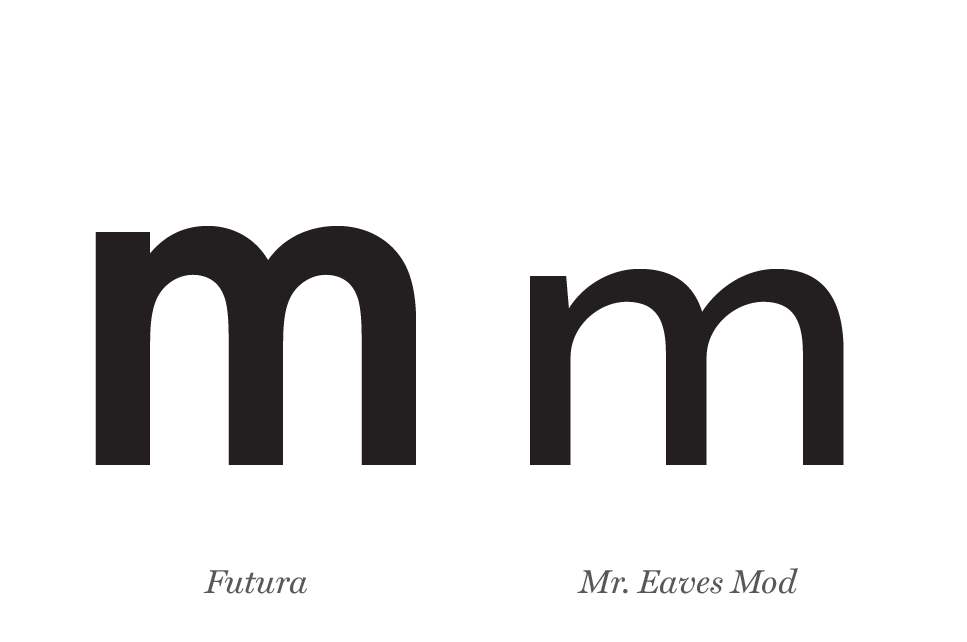
The lowercase m is one example of the similarities between Mr. Eaves Mod and Futura. Disregarding the difference in x-height and stress, both lowercase m’s are vertical and the middle stem of each m both extend all the way to the baseline.
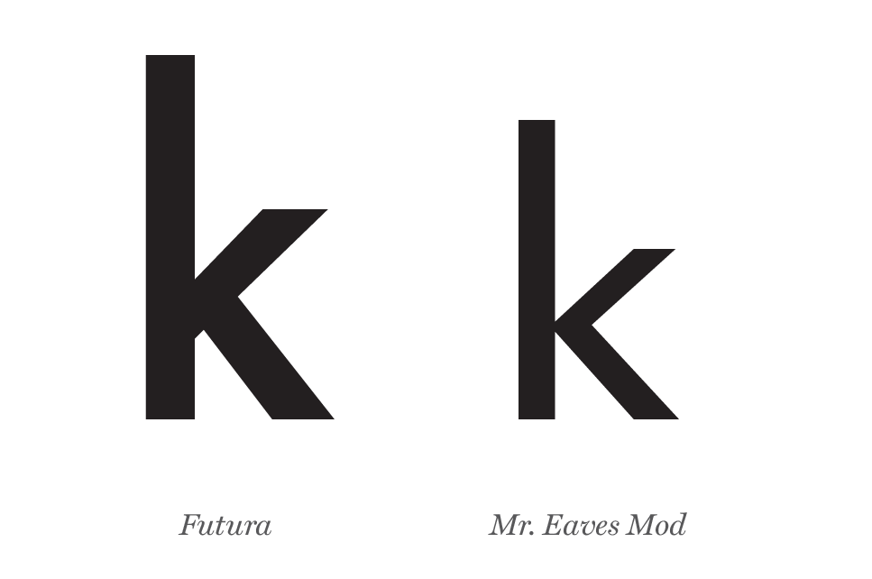
The lowercase k is another example of the similarities between Mr. Eaves Mod and Futura. Besides the leg’s placement, both lowercase k’s have an exaggerated stem ascender with short but very angled arms and legs that cut at a horizontal angle.
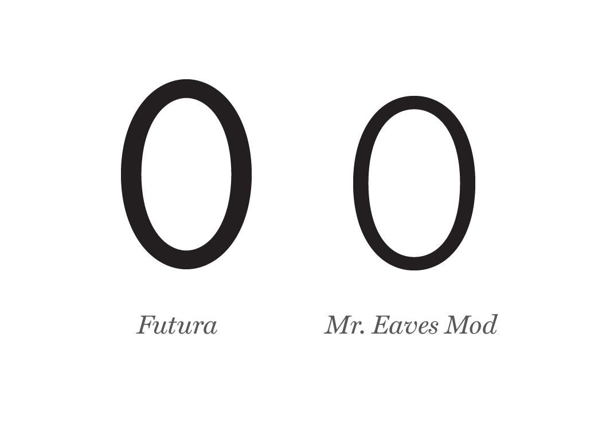
The zero in Futura and Mr. Eaves Mod are quite similar in shape. Although Futura appears a bit larger in the same point size they both have similar width.
Differences
The letters “H,x,p,l,q,s,t” in both Futura and Mr. Eaves Mod showcase the differences in height and size with the ascender line, cap line, x-height, baseline, and descender line. Futura appears a bit taller and narrower, while mr. Eaves Mod is a bit more condensed and even has the same ascender height and cap line.
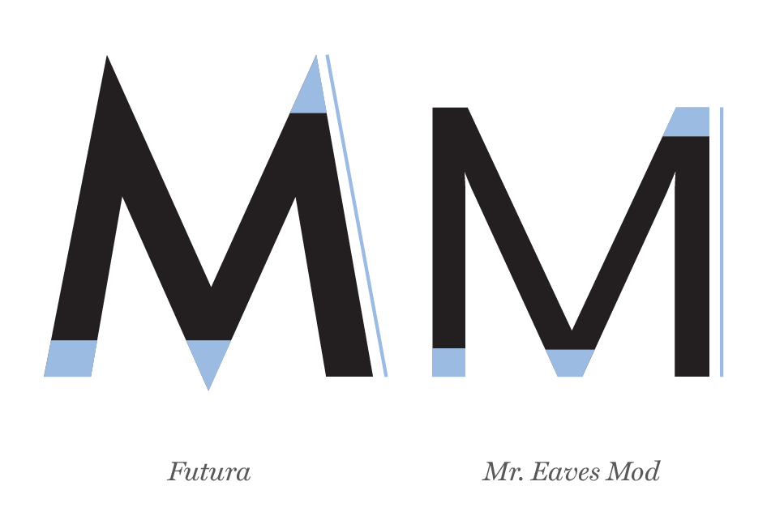
Although similar as a lowercase form, there are more distinct differences between Mr. Eaves Mod and Futura for the uppercase M. Mr. Eaves Mod’s uppercase M is completely vertical compared to the tilted angle of the uppercase M of Futura. The bottom vertex of Futura’s M is a sharp point whereas Mr. Eaves Mod is flattened to sit on the baseline. The top vertexes of Futura and Mr. Eaves Mod are also mimicked by the bottom vertex for each M.
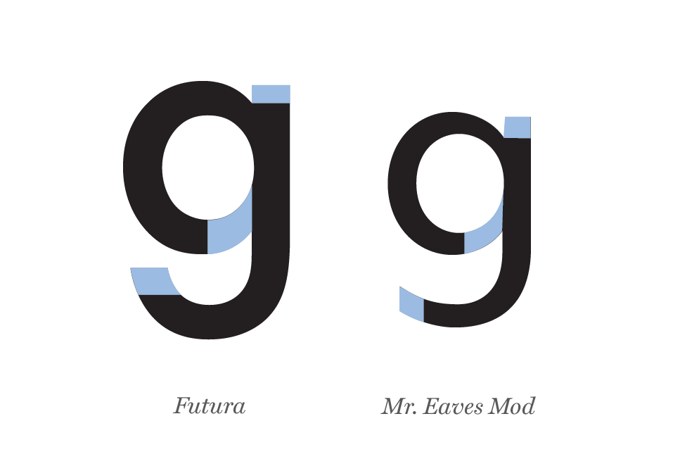
The tail of lowercase g in Mr. Eaves Mod flattens out and cuts at a vertical angle, while the tail of lowercase g in Futura scoops up and cuts at a horizontal angle. The ear in Mr. Eaves Mod slants at an angle on the left side, but the ear in Futura keeps uniformed 90-degree angles. Lastly, there is more of a stress in the counter area of Mr. Eaves Mod than Futura’s counter.
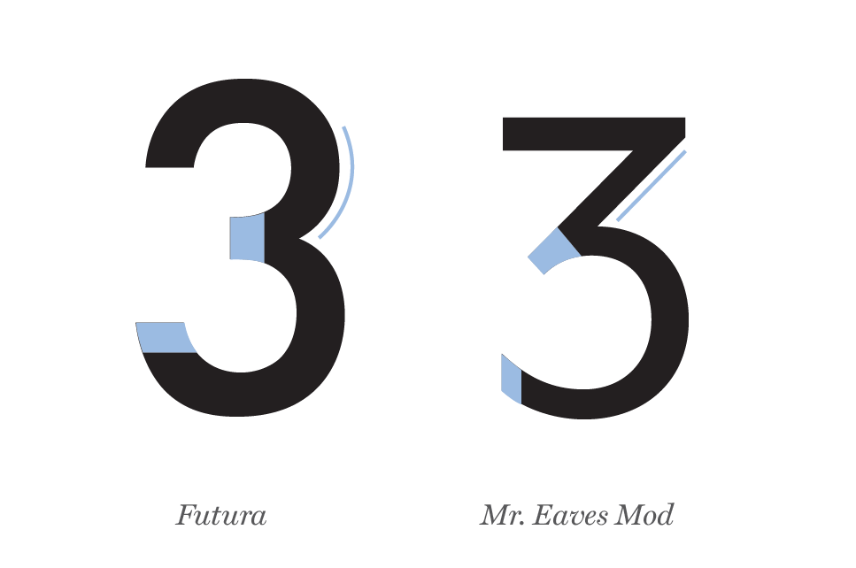
Futura and Mr. Eaves Mod’s number 3 have distinct differences. Futura’s 3 is completely rounded with the edges cut off at 90-degree angles and no stress. Mr. Eaves Mod’s 3 is a combination of rigid and rounded parts.
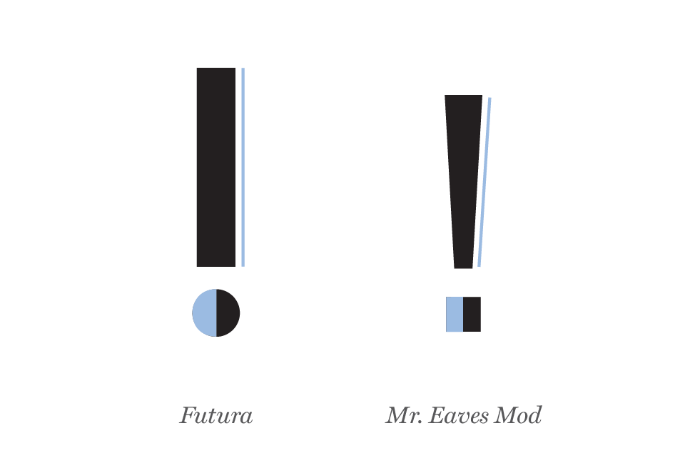
The exclamation-point of Futura is completely vertical with no stress and the dot is a perfect circle. However, the exclamation-point of Mr. Eaves Mod angles inwards going top to bottom, creating stress, and the dot is a square instead of a circle.
Examples and visual references
Futura
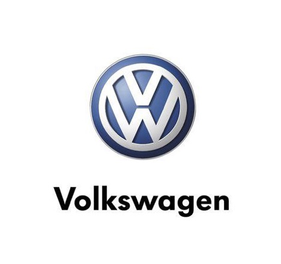
Futura is used in German car company, Volkswagen's logo.The Party City logo
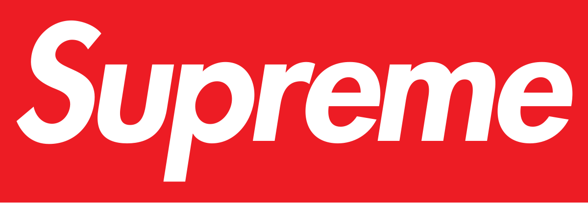
The Supreme logo features an italic version of the Futura font.
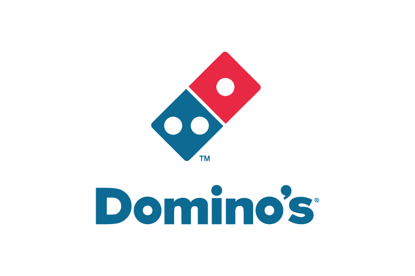
The Dominos Pizza Logo features a bold version of the Futura font.
Mr. Eaves Mod
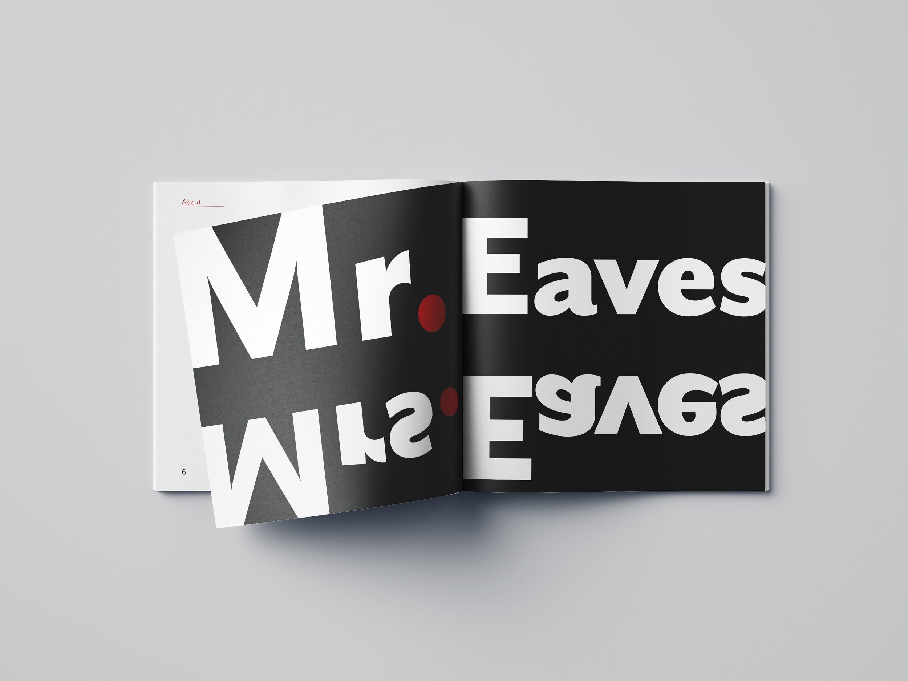
Book showcasing the font Mr. Eaves and Mrs. Eaves.
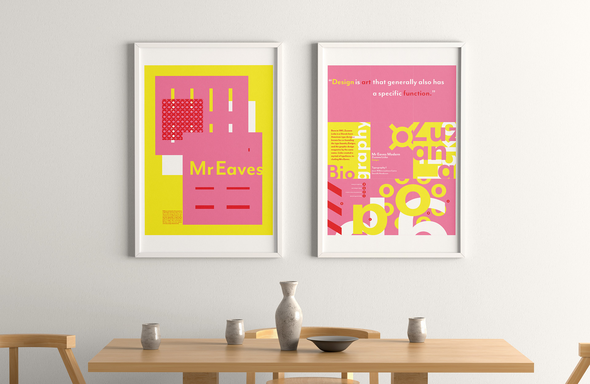
Poster showcasing Mr. Eaves Mod.